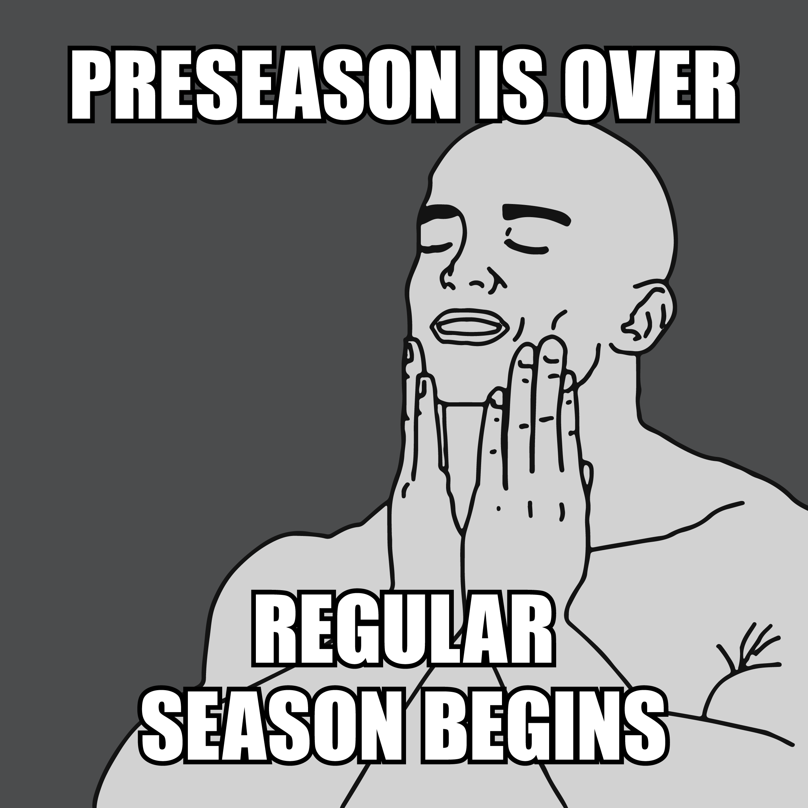

Al Davis RIP Fantasy Football
The official site for all things ADRIP
Week 1: In-Review
God bless Fantasy Football. There are many things a man can do with his time - this is better than those things.

It's been a long time coming, but after a tumultuous wait, the 2015 NFL season has finally begun. If you were like me, your life finally had purpose again.
A lot had changed over the summer. Some big name free agents had swapped teams, namely running backs. While there was little to no hype around the incoming RB class, the top 2 picks in the draft were highly praised QB's (more on them later), and a WR class with increasingly high expectations after the rookie breakouts from the 2014 season. The Jets were once again searchign for a quarterback

The once hottest name in the NFL was learning how to take a back seat to...err...Kirk Cousins?

Which just further cements why Skip Bayless is an idiot, and no one will be calling for him to be a GM anytime soon.
I'll say it AGAIN: Give me RG3
over Luck - any day, any night, any year, any career.
— Skip Bayless (@RealSkipBayless) October 15, 2012
Just about the only thing that didn't change, was the consistency of Tim Tebow's 53-man roster spot.

In fact, possibly the only bigger garauntee we know to be true, is that the NFL is to be taken seriously. Particularly when it comes to personal conduct both on and off the field. Players have to remain in line, and represent the shield with pride, and there is a zero tolerance policy against those who think otherwise. This never has been more clear than perhaps this offseason, as we saw big name players, with heavy fines (additionally, see Stallworth, Donte, who apparently works for the Washington Post now).

Hardy, would choose not to appeal his suspension (chances of injury are much less on vacation, especially in a contract year), however, Brady and the Patriots went quite an opposite route, and that ended up being all that was talked about for nearly the entire summer.
<>Despite all the happenings this summer; big free-agents changing squads, the entire 49ers defense retiring, Mariota going #2 in the draft, etc.; the entire offseason was essentially consumed with one topic...Deflategate. All of that ended when Judge Berman decided to throw out the suspension on grounds of a lack of fair due process for Brady. This caused a very clear rift, which forced all fans of football alike, to really look within themselves, and determine where to side on such an issue.
Roger meanwhile, was once again reminded that while being the most hated commisioner in professional sports, he is also a joke when it comes to handing down punishments. He also considers himself an impartial 3rd party, which he's still trying to understand.

All that being said, that meant Brady was on the field for week 1, and it seemed clear, he had every intention of rubbing that fact in Goodell's face
The stage was set for Thursday night, Steelers vs. Patriots, a battle of offensive juggernauts. The Steelers knew they were going to have their work cut out for them on defense, but Mike Tomlin had come up with what seemed to be a bulletproof strategy:
We're going to leave Gronk wide open the entire game, and make force him to beat us. We don't even think Brady will see him out there.
Some critics who aren't as intune with the chessmatch that is football, questioned the tactics

We all know though, that the proof is in the pudding. Surely, the critics would be silenced as the Steelers boarded their bus home Thursday night, with a victory in hand.
The game started, and true to his word, Tomlin deployed the questionable tactic several times throughout the course of the game. Each time, with equaled success.


Much to the surprise of experts everywhere, the tactic did not pay off. The issue seemed to be two fold.
- Brady was in fact able to locate Gronk on the field.
- The Steelers had mistakenly put in the highschool sub package, resulting in Gronk being roughly 2 feet taller than the tallest defender.
The Steelers made the game look close on a late TD pass to Antonio Brown (which apparently had a $100 Million gambling impact, but make no mistake, had there been more than 1 second left on the clock, Gronk would have likely ended the night with 4 TD's.
The only other real take away from that game, was the fact that Antonio Brown looks like a LEGO character

How great was it to wake up Sunday morning, and know there was a full slate of NFL games to watch. The first week to see your team in action. The ups, the downs, the roller coaster that is fantasy football. The misery, the jubilation, the down right awesomeness. A full day jam packed from sunup to sundown of fantasy glory.
Among a few of the notable moments. Aaron Rodgers reunited with James Jones, seemingly forgot that he'd lost Jordy Nelson for the season. While Jones rode the bench to an impressive 2 TD day in his debut, Rogers spent every spare moment he wasn't throwing a touchdown, to ensure he could get any competitive advantage possible.

For many of us, though we care little for the Titans or Bucs, we did want to see Mariota succeed, and in particular, against Winston. Both QB's started out very strong. Marcus kicked things off by throwing his first NFL TD pass to Kendall Wright for a Titans touchdown. Not to be outdone, on the subsequent drive, Winston followed suit with the same.
Marcus would end up sitting out the majority of the second half, as he steamrolled his way to an impressive victory, and notched the second highest fantasy point total of the week, just behind Tom Brady with 32 and 35 points respectfully.
All the Oregon fans out there will likely have fond memories of watching Chip and the Ducks over the years, with their creative playcards each week, and small army of play callers on the sideline. With the effectiveness of this system at Oregon, it was no real surprise he continued to employ the same system when he brought the blur to the NFL.
/cdn0.vox-cdn.com/uploads/chorus_asset/file/2446226/signals.0.gif)
While most would consider his system quite ingenious, ESPN even took at shot at trying to crack it back in 2011:
ESPN tapped Mark Kozek, a math professor at Whittier College in California and code-cracking buff who used to play football, along with a team of photographers who kept their lenses trained on Oregon's sideline for two road games, in an attempt to unravel Kelly's code before the Ducks' 2011 BCS national championship game against Auburn.
They failed.
Unfortunately for him, the blowjob monkey, ultimately was unable to bring them to victory.
Finally, I've been doing a bit of scouting myself